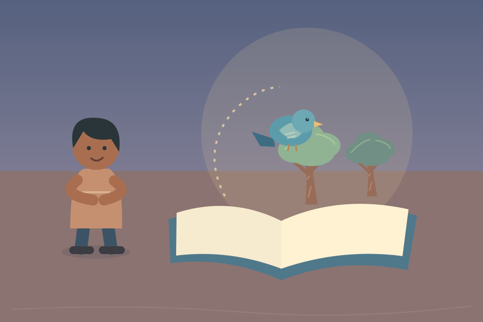

በ ቡ ቢ
Fidäl families
Unit 1 · Explore seven vowel orders, find forms in words and practise writing.
35 basic families · labialized and additional forms
Begin with Tigrinya Fidäl families. Then connect pictures and two-character words.
Unit 1 · Explore seven vowel orders, find forms in words and practise writing.
35 basic families · labialized and additional forms
Unit 2 · See a picture, build its word, recap and try a word check.
About 3–5 minutes per activity · begin with three words

20 illustrated bedtime adventures in Tigrinya.
Open Stories →Original drafts · Fluent-speaker review pendingEach activity includes a purpose, teaching, practice, recap, a supported check and a next step. Time estimates are planning estimates, not timers. These visual practice prototypes do not yet teach reliable pronunciation. All language and image associations require qualified native Tigrinya review.
Practice stays in this tab by default. Choose Save practice on this device to keep completed checks and preferences across visits. Unfinished activities and drawings reset on reload. There are no accounts, trackers, advertisements or uploads. Use My practice & settings to stop saving or clear this app’s saved history.